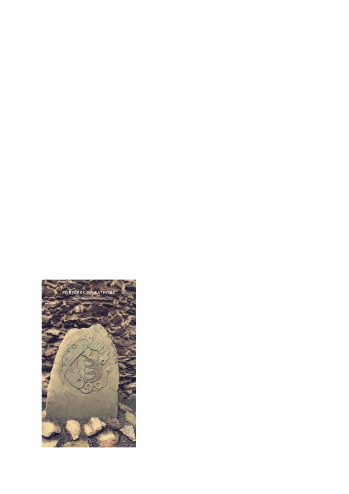

Cetatea Bathory - Reportaj
Cetatea Bathory din Șimleu Silvaniei este o cetate medievală care datează din a doua
jumătate a secolului XV. Astăzi servește ca unul dintre obiectivele turistice ale orașului și
găzduiește de-a lungul anului diferite eveniemnte și activități destinate atât comunității
șimleuane cât și celor care se încumetă să viziteze.
Astfel, l-am contactat pe domnul Daniel Stejerean, director al Muzeului Memorial al
Holocaustului din Transilvania de Nord și a Centrului Național de Informare și Promovare
Turistică din Șimleu Silvaniei pentru a-i pune o serie de întrebări despre istoria cetății Bathory
și despre activitățile care au loc în interiorul cetății.
Prima întrebare adresată a fost: “Ce poveste se ascunde în spatele acestor ziduri?”. După
ce acesta aruncă o privire lungă înspre ce a mai rămas din castelul Bathory care se afla în acest
loc, răspunde: “Fortăreața, declarată în prezent monument istoric, exista în anul 1532, fiind
reședința familiei nobiliare a Bathoreștilor, istoria medievală a Șimleului fiind strâns legată de
familia Báthory, familie princiară, care a jucat roluri importante în istoria transilvăneană.
Cetatea Șimleu intră în posesia familiei amintite anterior în urma casatoriei lui Bathory Lászlo
cu Medgyesaljai Anna, în anul 1351, devenind resedința Principilor ardeleni din familia
Báthory.De la începutul sec. al XVI-lea datează construirea castelului cetate din centrul
orașului, reședința familiei nobiliare Bathory și centrul unui întins domeniu feudal. Acesta
cuprindea 50 de localități, din care două erau târguri: Șimleu Silvaniei și Crasna și 48 erau sate,
din care 37 erau românești, iar 11 erau maghiare.De-a lungul vremii, cetatea și orasul au suferit
numeroase atacuri și devastări din partea turcilor și tătarilor, dintre care cele mai pustiitoare au
fost cele din 1594 și 1668. Ultimul atac a marcat și începutul declinului cetății care în 1774
ajunge în proprietatea orașului.”
Informându-mă puțin la rândul meu despre această cetate,
am auzit de o legendă urbană, așa că, după ce Daniel a
terminat de povestit scurta istorie, următoarea mea întrebare
a fost: “Am auzit de o legendă urbană despre Ștefan Bathory
a înfrânt un balaur, poți să o povestești?”, răspunsul lui a
fost aproape instantaneu: “Desigur, după cum poți vedea
aici - arătând către o piatră în care era sculptat blazonul
familiei Bathory - pe acest blazon se află trei dinți de balaur,
ei bine, această legendă spune că cei trei dinţi din blazonul
familiei Bathory se explică prin faptul că Ştefan a ucis în
tinereţe un balaur care mânca oile țăranilor și care locuia
într-o peşteră situată într-unul din versanţii dealului Popos,
de pe malul stâng al râului Crasna, care trece prin centrul
orașului. Ştefan a umplut mai multe blăni de oaie cu var
nestins, balaurul a mâncat respectivele blănuri, după care a
coborât la Crasna să bea apă. În momentul în care apa băută
de balaur a făcut contact cu varul, acesta a început să se
stingă în balaur, ucigându-l. Principele i-a scos trei dinţi,
care au ajuns mai apoi pe blazonul familiei.”
După ce am trecut printr-o scurtă lecție de istorie, am ales să vorbim despre vremurile
actuale, următoarea mea întrebare fiind: “După o istorie atât de bogată, ce se întâmplă azi în
cetate?”. Parcă așteptând să pun întrebarea asta, îmi răspunde cu o anumită urmă de entuziasm
în voce “ Păi, chiar lângă cetate este sediul Centrului Național de Informare și Promovare
Turistică din oraș, unde avem la activ un grup de circa 20 de voluntari, iar cu ajutorul lor, al
primăriei și al Consiliului Local al Copiilor și Tinerilor, pe parcursul anului avem diferite
activități aici în cetate, precum activități de 1 iunie dedicate copiilor, expoziții de artă locală,
seri de film, dacă ne permit împrejurările, iar vara aceasta, cum au fost impuse reguli de
distanțare socială, am deschis porțile cetății domnului Dumitru Costalaș, profesor de pictură în
cadrul cercului de pictură Silvan-Art, care și-a adus elevii în cetate, pentru a putea continua
activitatea lor artistică, dar între timp să și respecte normele impuse. Alt eveniment major care
recent s-a mutat în incinta cetății este <<Fântâna dorului>>, un festival de muzica populara, la
care participă copii și adulți din diferite părți ale țării și care are loc tot vara. De doi ani, tot în
cetate, am început o nouă inițiativă, și anume <<Târgul ocazional de Crăciun>>, la care
promovăm talente locale și cu ajutorul Crucii Roșii Sălaj, subfiliala Simleu, strângem bani și
alimente pentru a însenina sărbătorile familiilor nevoiașe. Acum, ultimul, dar cu siguranță nu
cel din urmă, cel mai mare eveniment pentrecut aici sunt chiar zilele cetății Bathory, când are
loc <<Bathory Fest>>, la care participă trupe de reconstituire, atât din țară cât și din Republica
Moldova și Polonia. Festivalul se întinde pe trei zile, cu o paradă mică, în jurul cetății și una
mare, prin centrul orașului, spectacole de reconstituire al asediului cetății de către turci și multe
altele.”
Ajunși aproape la finalul întâlnirii, ultima mea întrebare a fost: “Aveți ceva planuri sau
proiecte legate de cetate pe viitor?”. Oarecum amuzat de întrebarea pusă de mine, Daniel îmi
răspunde: “Da, cetatea se află într-un proiect european de reabilitare, iar pe lângă asta, ne axăm
pe îmbunătățirea activităților deja existente și pe un proiect de înfrățire cu orașul Czchów, din
Polonia.”
La final i-am mulțumit lui Daniel pentru turul făcut, iar acesta a răspuns: “A fost o
plăcere! Sper să ne mai întâlnim pe aici cât mai des, în cadrul activităților!”